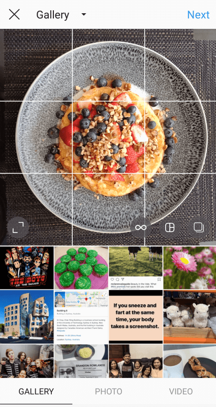
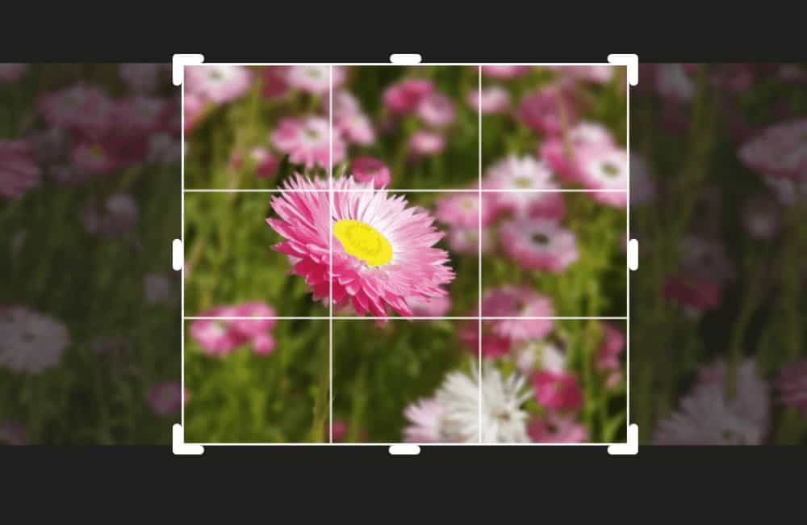
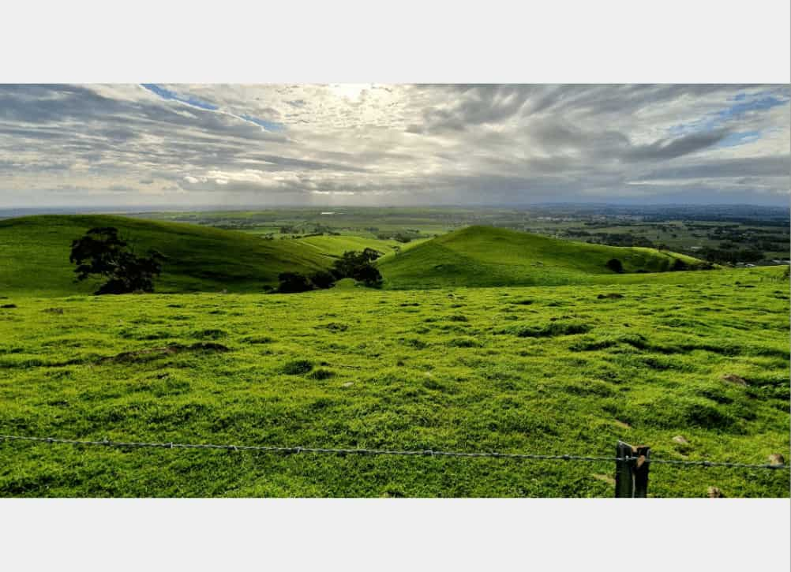

As the visual platform it is, we all want our Instagram photos to look their best. This involves adding filters, color boosts, and at times, Photoshop effects, to achieve the ideal image we’re after. While our blog has covered plenty of these subjects already, a topic we’ve yet to touch on is the technique of cropping photos for Instagram.
The process is the first thing that pops up when uploading a new photo. Cropping a photo determines its focal points, thus crafting a tighter story or message in its visuals. It’s a simple technique, yet offers that quick, subtle boost in aesthetic quality.
Why Crop Your Photos? Composition Tips for Instagram
Good photography is crafted through a range of factors; these including the right lighting, angle, background, and color pallette. However, above all else, a quality photo starts with proper composition.
This entails how the elements in your photo are arranged to convey your message. An image with good composition will successfully guide its viewer’s eye towards the photo’s most important aspects – oftentimes in a specific order.

Good composition allows you to properly tell your story. It effectively makes your image interesting, regardless of how “plain” or “bland” your environment or subjects may be.
This is where cropping can play a huge role; by snipping away unimportant aspects of your image, you’re giving your photo a tighter focus – framing only the most intriguing details.
Below, we discuss how cropping your photos for Instagram can instantly give them that extra oomph – creating a more professional, cohesive feed overall.
The Rule of Thirds
Arguably the most common guideline used by photographers, the “Rule of Thirds” refers to a method of composition used to balance and space out your image; while still maintaining visual interest.

This technique involves imagining your photo divided into a grid of nine equal parts. Generally, your main subject takes up one-third or two-thirds of the photo – either horizontally or vertically.
While some may choose to place their most important elements at the center of the image, an off-center composition generally creates a more interesting, natural look.

Having your subject placed in the far-left or far-right corners of your image also lets you play around with the remaining negative space. The image above, for example, places the house in the bottom-left corner of the photo, taking up a vertical one-third of the “grid.” The rest (two-thirds) of the photo can then highlight the surrounding scenery, offering plenty of interesting colors, lines, and textures for the eye to explore.
Having the “Rule of Thirds” while cropping your photo can thus make for a more focused, balanced image. While the “rules” above are commonplace, you can get as creative as you want with this; and experiment with placing subjects within or across various squares or intersections on the “grid”.
Stick to Details
Another benefit to cropping your photo on Instagram is the ability to highlight specific details.
You may have taken a photo with unnecessary elements distracting from your main subject. Instead of leaving them in the frame – making your photo look less “professional” – you can opt to crop them out.

This makes for a tighter shot, more accurately conveying your message. This helps your viewer concentrate on only the most important details.
Zooming in and cropping your photo also lets you fill up your frame, helping your subject(s) stand out in Instagram’s small, square aspect ratios.
Have It Centered
Though the “Rule of Thirds” encourages keeping your subject off-center, sometimes it’s fine to break the rules.
In fact, it may even boost your image. Centered framing works best with strong, focused subjects. If they can stand on their own and grab the viewer’s attention, they may work best at the center of your “grid”.

Courtesy of Emil Parkarklis of iPhone Photography School.
Emil Parkarklis of iPhone Photography School does just this with the photo above. The silhouettes of both the window and person next to it pop right out of the frame, and work well as central elements.
This composition also optimizes Instagram’s squared framing, as there’s little extra space around your subject to divert your viewer’s attention.
Keep Things Symmetrical
Another popular technique that breaks the “Rule of Thirds” is the use of visual symmetry.
When applied well, a symmetry can enhance the visual look of a photograph; and bring attention to an otherwise “bland” or uninteresting subject. It adds a sense of harmony to your image, keeping things balanced and proportionate.
However, as the “Rule of Thirds” dictates, an overuse of symmetry can get boring pretty quick. Not all environments or subjects need geometric balance – so it’s nice to add a bit of interest here and there.
Photographers often keep the main focus of their image symmetrical, while adding a few dynamic elements to keep things engaging. The photo below, for example, displays a symmetrical road in the middle of the image. The upper, horizontal two-thirds, however, display varying visual details of cars, buildings, and the color gradient of the sunset.
These elements keeps things aesthetically interesting, while the image of the road below maintains a sense of balance.
When cropping your photos on Instagram, you can adjust an otherwise disproportionate image to create a sense of Wes Anderson-style symmetry.
Less is More… But Make it Pop!
A helpful piece of advice from the photographer Kika of her self-named blog, Kutova Kika; is to keep things sweet and simple when capturing that perfect image.
It’s tempting to include all the interesting details observed through your lens, though multiple elements at once can leave your image unnecessarily complicated and unfocused.
Instead, focus on the one standout detail that truly makes the image for you. Make it the prime attraction of your photo; all other details are simply there to enhance rather than detract away from your subject.
You can crop an otherwise “busy” photo to achieve this, cutting out any unnecessary, distracting elements.
Of course, it’s important to make your subject discernible from its surroundings. Play around with lighting and colors to really make them “pop” from the frame.

Photographers often contrast hues and color palettes between the subject and their environment to create a striking, dramatic effect.
Default Aspect Ratios on Instagram
Now that we’ve covered photo composition, let’s take a look at the three main aspect ratios Instagram provides its images.
The “aspect ratio” of an Instagram photo refers to its width in relation to its height. Identified by a ratio, the first number refers to the image width, while the second refers to its height (e.g. 4:5 for portrait image aspect ratios).
The size of an image, on the other hand, is expressed by the number of pixels that make up its width and height; the first number being addressing its width, while the second addressing its height (e.g. 1080 x 1350 for portrait images).
Landscape
The landscape aspect ratio is 1.91:1. The optimal size for landscape-oriented photos is 1080 by 608 pixels.
Since they’re longer horizontally, this aspect ratio is perfect for those lengthy images of scenery and cityscapes. However, they generally have a poor effect on users, marketing-wise.
To fit within your phone screen, Instagram must therefore downsize your landscape image, while still retaining its width. As a result, you end up with a photo that’s half the size of a default, “square” Instagram photo.

Users scrolling through their feed are therefore more likely to skip over your image, in favour of larger ones that command more attention.
To get around this, some users opt to slice their landscape image into multiple photos, uploading them as a carousel post. Viewers can then view the full landscape photo in parts (each part as its own carousel photo); without having to sacrifice the size of the post.
Courtesy of leonardociccola (Instagram account).
Portrait
The portrait aspect ratio is 4:5. The optimal size for portrait-oriented photos is 1080 by 1350 pixels.

Portrait images take up the most space on one’s feed, making them the most marketable aspect ratio. As such, users are encouraged to optimize the full 1080 x 1350 image size.
Square
The “square” frame was once Instagram’s original, and only default size for photos.
The square aspect ratio is 1:1. The optimal size for square photos is 1080 by 1080 pixels.

Though the app will automatically crop your original photo into a square, users are recommended to keep to this aspect ratio as closely as possible. This way, you aren’t forced to cut away any important details of your image.
For all aspect ratios – uploading photos of a larger size is recommended, as Instagram will still reduce them to fit while losing none of the original quality.
Cropping Your Photo (Using Instagram’s Native Tools)
To achieve a landscape or portrait aspect ratio, simply choose an image from your camera roll. Then, tap on the “crop” icon at the bottom left-hand corner of your image.
Depending on the original sizing of your photo, Instagram will choose the appropriate aspect ratio to fit your image.

This means if your image originally had a landscape orientation, the cropping tool will automatically fit it in the frame as such.
The same goes for portrait images.

If you wish to crop your image further, you can pinch and adjust the image on your screen as necessary. A 3×3 grid will automatically appear as you tweak your image, helping you achieve the right balance and symmetry.
Crop Photos for Instagram – Third-Party Apps
The app’s built-in cropping tool, however, is fairly limited. Your image is restricted to the default sizing Instagram provides for each aspect ratio.
For larger, lengthy photos that surpass these set dimensions, users have no choice but to crop out a few details.
But with a third-party app, you may just save your entire photo.
InShot
InShot is a photo and video editing app available on both Android and Apple devices.
Looking to upload a portrait or landscape photo without having to sacrifice a single detail? InShot ensures your image fits tightly within Instagram’s square dimensions.
Upon uploading a photo to InShot, the app reduces its size to fit a 1:1 square ratio.
Courtesy of InShot.
This leaves you with all the details of your original image, though rather than being framed by boring white borders (or none at all); InShot optimizes the square aspect ratio by filling in this empty space with a blurred, zoomed-in image of your original photo.
The result is a full, detailed image with an aesthetically-pleasing backdrop. You needn’t reduce your landscape photos to a tiny size, either!
If you wish, you even have the flexibility of resizing and rotating your photo within this frame.
Courtesy of InShot.
InShot also provides extra cropping options, allowing users to choose from the varying aspect ratios provided on Instagram, and more.
Courtesy of InShot.
Additionally, the app provides a generous selection of filters, stickers, and text effects to further spice up your photo.
Courtesy of InShot.
InShot isn’t just a tool for editing images, however. With their wide range of intuitive features, users can also create collages, edit videos, or create a video from scratch.
Kapwing
Kapwing is another creative online platform that offers a variety of tools for any avid Instagrammer.
Available for free on desktop (though extra storage will cost users a premuim price of $20 a month), its most basic feature is the Kapwing Studio. Here, users can edit their Instagram images with an extensive suite featuring sticker, text, and even animation options.
Courtesy of Kapwing.
Of course, this menu also offers a cropping tool; allowing users to pick from a selection of aspect ratios that suit their image best.
Courtesy of Kapwing.
Though these default options are available, users can still click and adjust the cropping frame to their liking.
Users can also choose to customize their photo’s exact output dimensions. By clicking on “Custom Size” from the canvas size options, you can then enter the exact width and height you want for your image. There’s also an option to “lock proportions” to ensure it stays within the same aspect ratio.
Courtesy of Kapwing.
Kapwing doesn’t neglect the importance of Instagram videos, however. Their online video cropper adjusts your media to fit the right proportions for your feed. Simply upload your video and select from their menu of resizing options; and trim your video if necessary.

Courtesy of Kapwing.
Cropping Makes for Better, More Professional-Looking Instagram Photos
Now that we’ve run through the importance of composition, cropping, and the availability of online editing tools; you’re hopefully better-equipped for posting higher-quality photos (and videos!) on Instagram. Maintaining a feed of cohesive, focused images is a common objective among users, and these cropping techniques can help achieve just that.